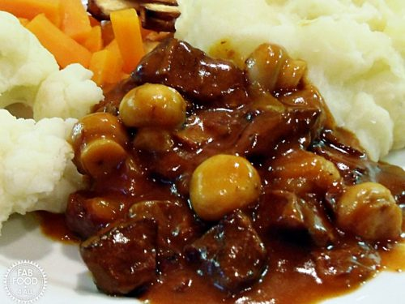

Ingredients
- 2 tablespoons beef drippings or butter, plus more as needed
- 1 tablespoon olive oil
- 3 pounds/1.5 kg sirloin tip, cut into fat fingers
- 3 large onions, sliced
- 4 cloves garlic, chopped
- 2 tablespoons all-purpose flour
- 1 tablespoon brown sugar
- 1 1/2 cups/375 ml beef stock
- 2 cups/500 ml beer
- 1 tablespoon red-wine vinegar
- Salt and freshly ground black pepper
- 1 bouquet garni
Directions
- 1. Heat the beef drippings and oil together in a saute pan.
- Working in batches, brown the beef strips on all sides.
Remove from the pan. In the same pan, fry the onions until soft, about 15 minutes, then add the garlic for 1 minute.
- Remove. (Check if there is fat in the pan. If not, add a good tablespoon of butter and let it melt.)
Add the flour and sugar to the pan and cook for 1 minute to make a roux.
- Gradually whisk in the stock and bring to a boil.
(At this point, turn the oven on to 325 degrees F/160 degrees C.)
- Add the beer and vinegar to the boiling stock, and bring back to a boil, cooking until thickened, about 10 minutes. Remove from the heat.
- In a large casserole dish, layer the onions alternately with the beef strips, seasoning each layer as you go with salt and pepper.
- Tuck in the bouquet garni and pour the sauce over. Cover and bake for 2 1/2 hours.
- If you can wait a day before eating, cool the dish completely when it's out of the oven and refrigerate overnight:
the flavor will be even better when you reheat it.